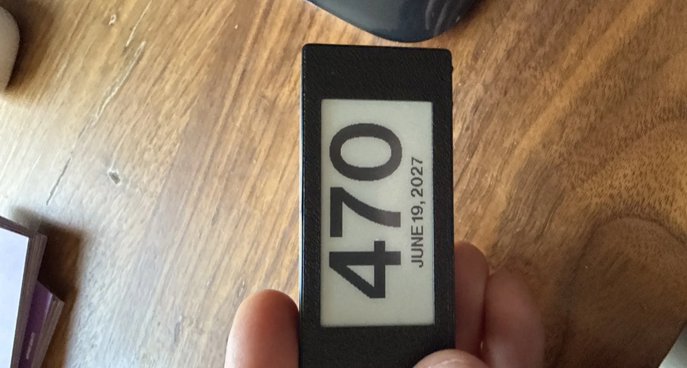
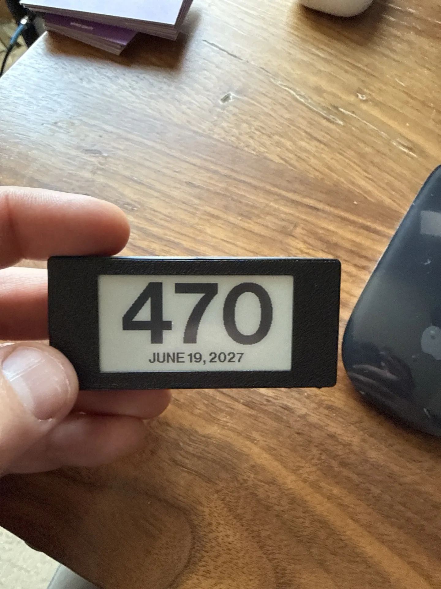
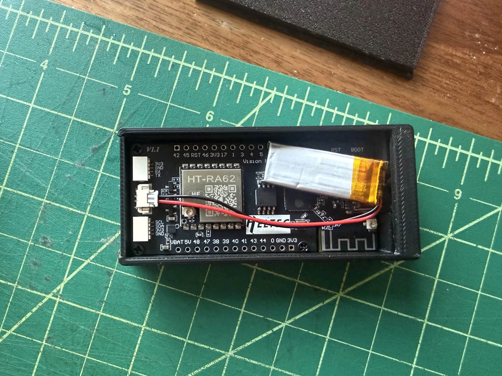

Countdown Device

A small device built around the Heltec Vision Master E213, designed to count down the days to a user-defined date.
On first boot, it creates a Wi-Fi access point prompting the user for their network credentials and target date. From there, every night at midnight, it wakes up, updates the e-ink display with the remaining days, and goes back to sleep.
The tiny 100 mAh battery paired with the ultra-low power consumption of the e-ink display keeps it running for 5–6 months without a charge.

